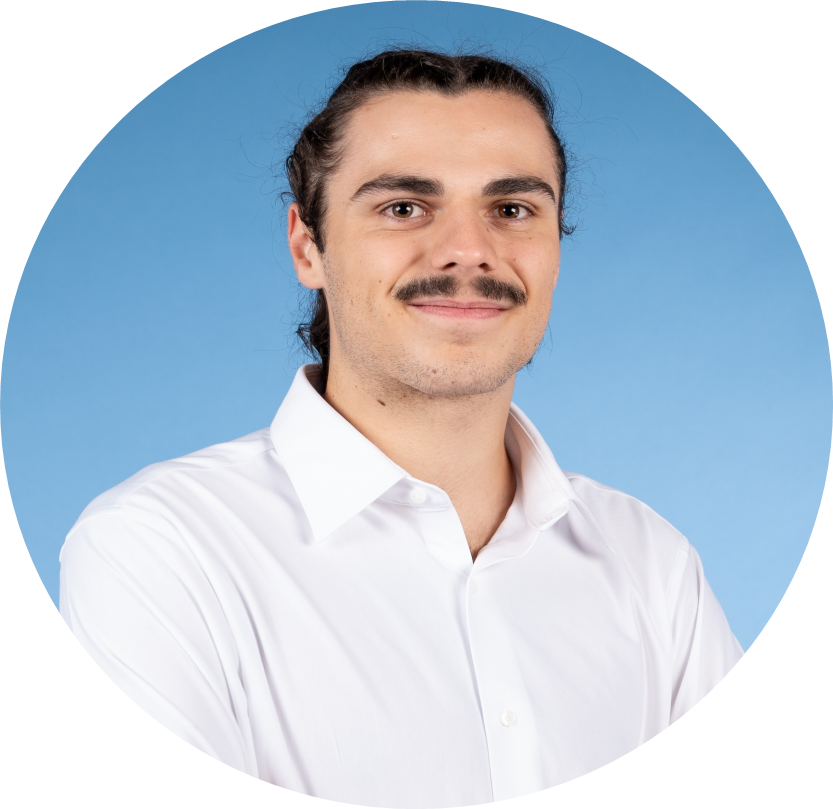

Raphaël Cassard
Élève-Ingénieur SysCom @ ENSEEIHT — Électronique RF, Antennes & Hyperfréquences
Toulouse / Nancy | (+33) 6 22 03 99 61 | cassardraph@gmail.com | Permis B

FORMATION
-
Diplôme d'Ingénieur SysCom (Télécommunications, RF & Antennes) Sept 2024 – PrésentENSEEIHT (Toulouse INP). Circuits hyperfréquences, réseaux d'antennes, guides d'ondes, radar, CEM.
-
Formation Synopsys — Design ASIC & CPU (Verilog) Juil 2026Formation intensive d'une semaine : flow Synopsys (Design Compiler, VCS, ICC2) et design CPU/SRAM en Verilog.
-
Classes Préparatoires aux Grandes Écoles (CPGE) Sept 2022 – Juil 2024Lycée Henri Poincaré, Nancy. Filière PCSI - PC* : Préparation intensive aux concours nationaux.
-
Baccalauréat Général (Scientifique) 2019 – 2022Lycée Marquette, Pont-à-Mousson. Mention Très Bien — Spécialités Mathématiques & Physique-Chimie, Option Maths Expertes, Section Européenne Anglais.
EXPÉRIENCES PROFESSIONNELLES & STAGES
-
Stagiaire Recherche — Conception, Prototypage CNC & Mesures RF d'Antenne 4.0 GHz Juin – Août 2026Universidad San Francisco de Quito (USFQ) — Cumbayá / Quito, Équateur.
- Modélisation et simulation sous Ansys HFSS d'une antenne patch large bande à 4.0 GHz (couplage capacitif avec résonateur parasite) sur FR-4 pour banc SDR (ToA/AoA).
- Fabrication en laboratoire par CNC (KiCad, FlatCAM), gravure chimique FeCl₃, soudure SMA.
- Mesures RF sur analyseur de réseau : bande mesurée de 370 MHz (9,25%) à -10 dB (cible ≥ 200 MHz) ; conception et mise en place d'un banc de test 2D sur mesure pour relever les diagrammes de rayonnement.
-
Mécanicien de Maintenance Industrielle Juin – Août 2025Rénovation Machines Industrielles (RMI), Nomeny et divers sites, France.
- Maintenance préventive et intervention mécanique sur des parcs de machines industrielles variés (en atelier et sur le terrain).
- Développement d'une grande autonomie technique et adaptabilité en environnement industriel exigeant.
-
Opérateur de Maintenance Biomédicale Août – Sept 2023Quipment, Nancy, France.
- Maintenance préventive, contrôle et configuration de dispositifs médicaux selon les normes cliniques.
PROJETS RÉALISÉS
-
Amplificateur Hyperfréquence 5.2 GHz & Émetteur Radio (ADS / Momentum) 2026Conception complète d'un amplificateur haute fréquence à 5.2 GHz pour un émetteur radio. Sélection des composants, adaptation d'impédance, dessin du circuit imprimé RF (layout) et simulation électromagnétique sous Momentum.
-
Moniteur Cardiaque Mixte (Analogique & Numérique) 2025Création d'un système complet d'analyse cardiaque : conception de la chaîne d'acquisition analogique (amplification et filtrage du signal ECG), suivie du traitement numérique sous MATLAB pour le diagnostic.
-
Fréquencemètre Temps Réel sur Carte FPGA (Artix-7) 2025Conception d'une architecture numérique en langage VHDL sur carte FPGA pour la mesure et l'analyse instantanée de signaux via le convertisseur XADC sous Vivado.
-
Serrure Sécurisée par Badge RFID & Émetteur Audio FM 2024Développement du contrôle d'accès sans contact RFID sur microcontrôleur PIC18 (langage C) / Dimensionnement d'un émetteur-récepteur audio FM avec VCO et PLL.
COMPÉTENCES & OUTILS
- Domaines Techniques : Électronique RF, Conception d'Antennes, Circuits Hyperfréquences, Électronique Analogique & Numérique, Télécoms & Traitement du Signal.
- Logiciels & CAO : Synopsys (formation 1 semaine), ADS (RF & Momentum), ANSYS HFSS, Orcad PSpice, Vivado, Quartus, MPLAB X • Langages : VHDL, Verilog, C/C++, Python, MATLAB & Simulink.
- Soft Skills : Leadership (coordination d'équipe 70 pers.) • Sociable & Esprit d'équipe • Logistique événementielle • Autonomie technique & Adaptabilité • Éthique & RSE.
- Langues : Français (Maternel) • Anglais (B2+ Certifié Cambridge) • Italien (A2 - Niveau intermédiaire).
ENGAGEMENT ASSOCIATIF & LOISIRS
- Vice-Président de liste (2024 - 2025) : Coordination d'une équipe de 70 personnes, gestion d'un budget > 15 k€ et organisation d'événements majeurs de l'école.
- Responsable Afterworks — AE ENSEEIHT (2025 - 2026) : Organisation hebdomadaire des événements au bar associatif ("Foyer") et animation de la vie étudiante.
- Centres d'intérêt : Natation de compétition (Niveau Régional) • Guitare Électrique (8 ans de pratique).